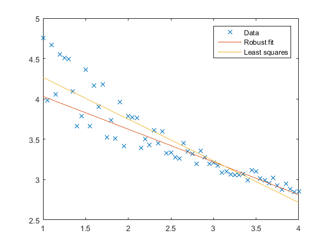

pvl_robustfit
Regress Y onto X using iteratively reweighted least squares
Contents
Syntax
beta = pvl_robustfit(X, Y, intercept)
Description
|pvl_robustfit| regresses Y onto X using iteratively reweighted least squares, with the Tukey bi-weight function. |pvl_robustfit| uses the Matlab function |robustfit| if the Statistics toolbox is available. Otherwise it uses the RLM function in the Python statsmodels package, which requires a Python installation.
Inputs
- * X* - a N x M matrix, where M is the number of predictors and N is the number of observations
- * Y* - a N by 1 vector
- * intercept* - an integer; 0 indicates no intercept, any other value indicates that the regression has an intercept term
Output * * beta* - a vector of coefficients, M x 1 if no intercept is specified, (M+1) x 1 if an intercept is specified. The coefficient for the intercept (if present) is beta(1).
Example
generate data with non-constant variance and outliers
X = 1:0.05:4; X = X(:); Y = 4 - 0.3*X + rand(size(X))./(0.5*X.^2); beta = pvl_robustfit(X,Y,1); beta2 = [ones(size(X)) X]\Y; % least squares regression figure plot(X,Y,'x') hold all plot(X,[ones(size(X)) X]*beta,'-') plot(X,[ones(size(X)) X]*beta2,'-') legend('Data','Robust fit','Least squares')
Copyright 2015 Sandia National Laboratories